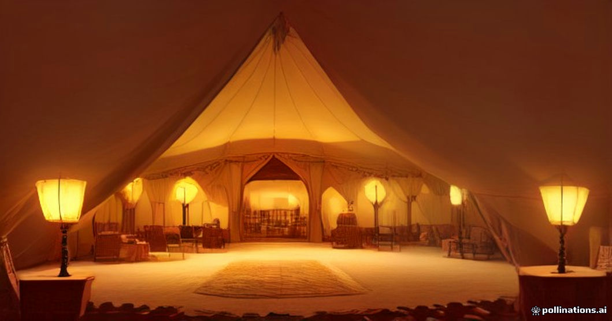

Most travelers focus on how desert tents look in photos—the brass lamps, handwoven rugs, and king-sized beds. In practice, photos do not tell you how a tent performs at 2:00 AM when an Atlantic wind system pushes across the High Atlas and hits the dunes of Erg Chebbi, or when a neighboring camp starts its evening campfire drum session.
Sleep quality in the desert comes down to four physical variables: fabric density, power infrastructure, topographic shelter, and distance from neighboring camps. Understanding how these factors interact helps you set realistic expectations and choose the right setup for your trip.
Tent Materials: Layered Canvas vs. Flapping Synthetics
The outer shell of your tent is your primary buffer against thermal swings and wind noise. Traditional nomad tents used heavy woven camel hair and sheep wool, which was dense, heavy, and effectively windproof. Modern tourism tents generally fall into two categories: heavy-duty multi-layer canvas or light synthetic blends.
When desert winds pick up at night, thin canvas or synthetic sidewalls snap and flap against structural poles. This creates a rhythmic, loud popping sound that keeps light sleepers awake. High-grade camps use triple-layer canvas—an outer waterproof membrane, an insulating middle layer, and a decorative inner cotton lining. This weight dampens fabric movement and muffles outside noise.
- Multi-layer canvas (400+ gsm) reduces wind flap and muffles ambient desert sound.
- Single-ply synthetic sidewalls vibrate loudly during midnight gusts.
- Heavy fabrics retain evening warmth longer into winter nights.
Generator Shut-Off Times and Battery Systems
Power delivery directly affects both sound levels and indoor climate. Budget and mid-range camps typically rely on diesel generators positioned 50 to 100 meters behind the tents. To save fuel and enforce quiet hours, most operators shut these generators down between 10:30 PM and 11:00 PM.
When a generator cuts off, lights go dark, fans or heating units stop operating, and the absolute silence of the desert takes over. If your camp uses 24-hour solar battery banks with modern inverters, you get silent power all night without the deep hum of an engine or sudden loss of climate control. For travelers using CPAP units or needing night lighting, this distinction is critical.
Dune Windbreaks and Topographic Microclimates
Where a camp sits relative to the dunes determines how much wind hits your tent walls. Camps built out on the flat gravel plain (reg) at the base of Erg Chebbi receive clear, unobstructed winds. While these flat sites offer easier access for transport vehicles, they lack natural windbreaks.
Camps set inside a natural dune bowl benefit from the surrounding sand ridges, which deflect high-altitude surface winds over the camp rather than through it. The trade-off is air circulation: during hot summer nights, deep dune bowls hold radiant heat from the sand, making indoor tent spaces warmer than those on the open flat.
Camp Spacing and Desert Sound Propagation
Sound travels remarkably far over open sand, especially at night when air temperatures drop. In concentrated camp zones around Merzouga, tents from different operators may sit only 30 to 50 meters apart. A late-night party or drum circle at one location will resonate through adjacent camps.
Private or higher-tier camps secure permissions to operate in isolated dune pockets separated by hundreds of meters of sand ridges. This physical barrier prevents sound bleed, ensuring that the only overnight acoustics you experience are the natural wind and desert silence.
| Factor | Standard Camp Setup | Luxury / Solar Setup | Impact on Sleep |
|---|---|---|---|
| Tent Shell | Single-layer canvas / synthetic blend | Triple-layer insulated canvas (400+ gsm) | High wind noise vs dampens acoustic flutter |
| Night Power | Diesel generator (off by 11:00 PM) | Silent solar battery storage (24/7) | Sudden loss of fans/lights vs uninterrupted power |
| Location | Flat gravel perimeter (reg) | Tucked into natural dune hollows | Exposed to gusts vs shielded from wind |
| Camp Density | 30–50m from adjacent camps | 150m+ distance or isolated bowl | Cross-camp noise bleed vs isolated silence |
| Climate Control | Passive ventilation / heavy blankets | Reversible heat pumps or climate units | Vulnerable to cold drops vs steady ambient temp |

Illustration, not a photograph — for the real thing, you'll have to stand on the ridge yourself.
Quick answers
A few follow-up questions travelers ask about this.
Will it be cold inside the tent during winter nights?
Yes. From December through February, desert temperatures can drop near freezing. Heavy canvas tents with thick wool blankets keep you warm once in bed, but the room air will be cold unless the camp features electric heating units powered by continuous solar energy.
How loud are the evening drum performances?
Campfire music usually runs from 8:30 PM until around 10:00 PM. In dense camp clusters, you may hear drums from neighboring sites until 10:30 PM. By 11:00 PM, official quiet hours take effect across most organized camps.
What happens if a sandstorm occurs while I am sleeping?
Well-anchored multi-layer canvas tents remain structurally secure during windstorms. You will hear strong wind noise against the outer shell, but heavy flap zippers and sealed ground tarps prevent sand from sifting into your sleeping area.
Planning your own route?
Tell us your dates and what matters to you — we'll answer with a straight recommendation, not a brochure.
Send an inquiry See the itineraries